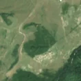
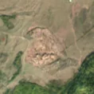

11,2 ha · Sasca Mare, com. Cornu Luncii
văzută schimbată prima dată pe 16 iul. 2026


Nu am găsit nicio autorizație de tăiere în jur.
Terenul: în afara amenajamentelor silvice publicate (pășune, mal de apă sau pădure privată fără amenajament în registru).
Ce se vede în poze: În poza detaliată zona marcată era o pădure deasă, cu coroanele copacilor lipite. În poza «după» pădurea a dispărut și se vede pământ gol, deschis la culoare, în timp ce pădurea din jur a rămas verde. Asta arată o tăiere rasă.